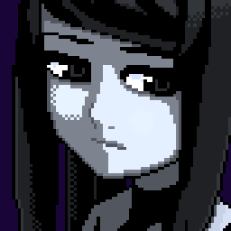

About me
I'm a French/Guadeloupean student in Game Design & Programming at ISART Digital, focusing on gameplay systems, tools, and player experience. My background spans C#, Blueprints, and the fundamentals of C++ for Unreal Engine 5, with projects across Unity, Godot, and UE5. Whether it's prototyping a card system or building debugging tools, I enjoy iterating until I solve problems.
Outside my studies, I run personal projects that mix programming, streaming, and crafting. I experiment with overlays, automation, and home lab setup to support my workflow. I also enjoy hardware tinkering, like building new keyboards or modding retro consoles.
Ultimately, my goal is to grow as a gameplay programmer, who can link creativity and engineering, designing systems that feel intuitive for players and empowering for designers. I'm always learning, iterating, and seeking opportunities to collaborate on meaningful projects.
